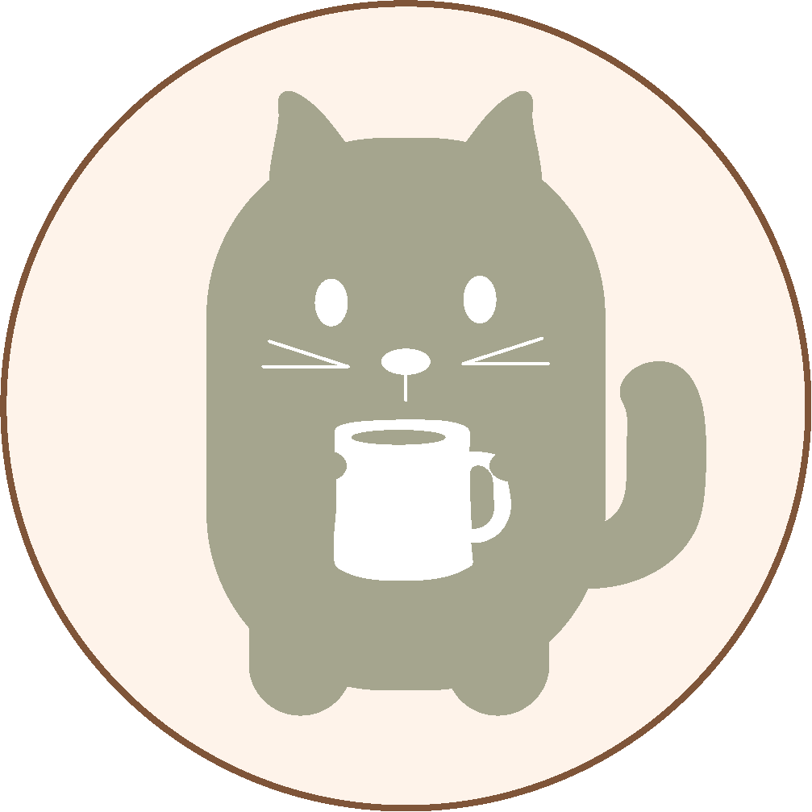
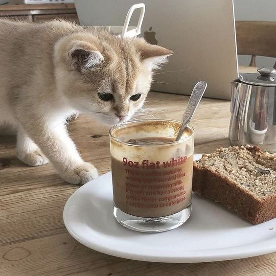
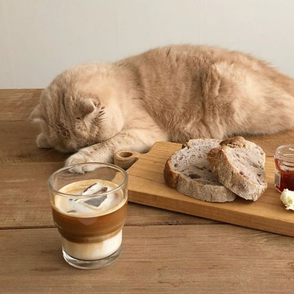
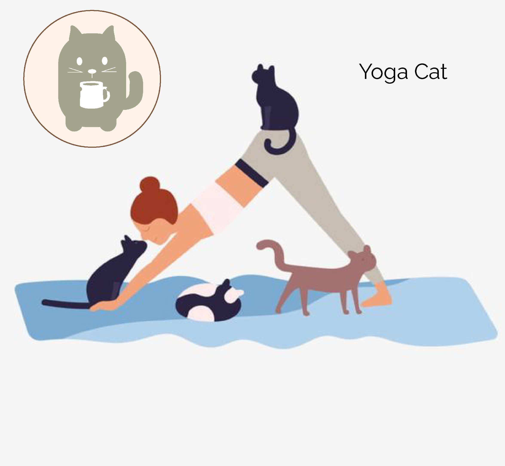

Welcome to Gato Cat Café the perfect place for cat lovers and coffee enthusiasts! Our mission is to create a warm and cozy space where you and our furry friends will share unforgettable moments.

Our Gato Cat Café partners with local animal shelters to create amazing events every month and encourgae our customers to participate and enjoy the company of a delightful group of rescue cats that are up for adoption

Monday- Friday: 11:00am - 7:00pm
Saturday- Sunday: 12:00pm - 8:00pm